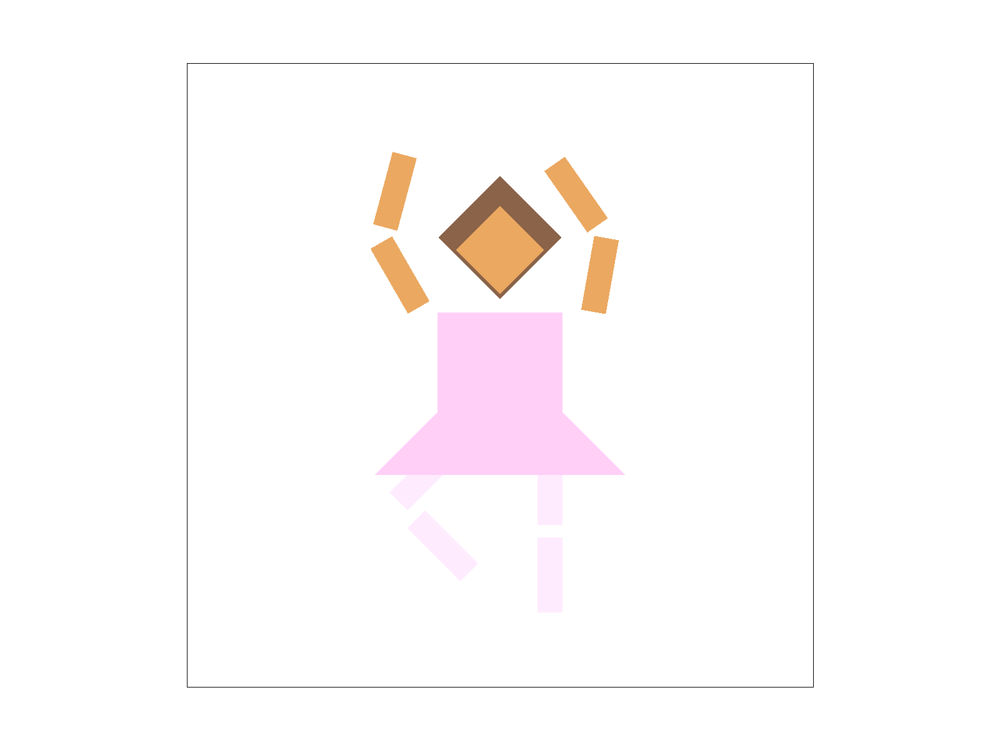
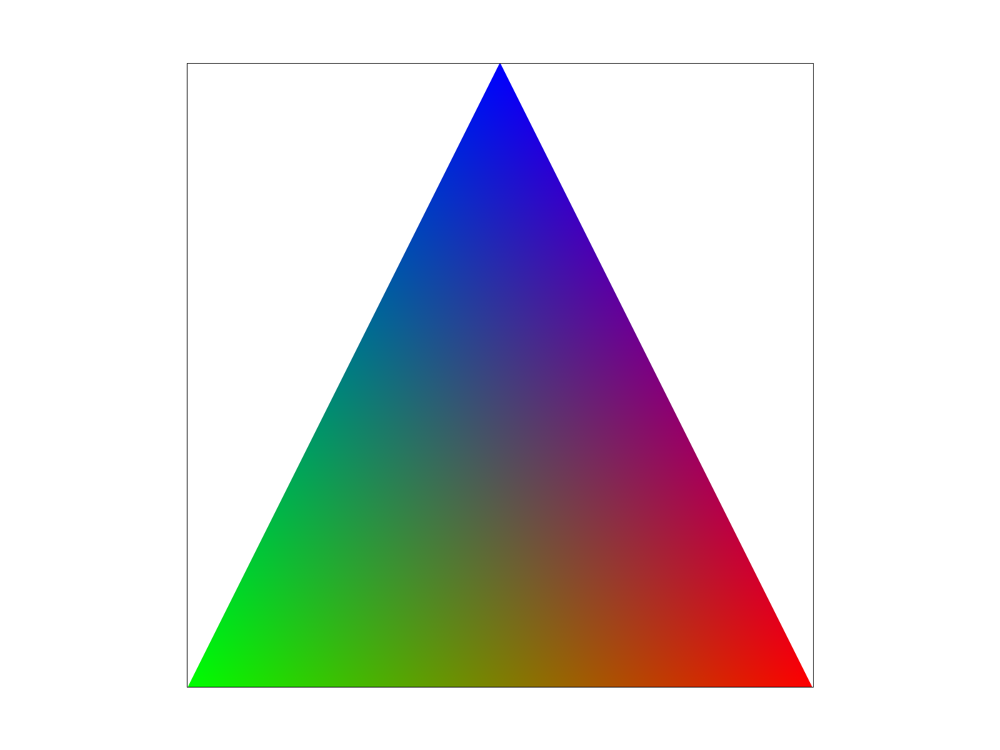
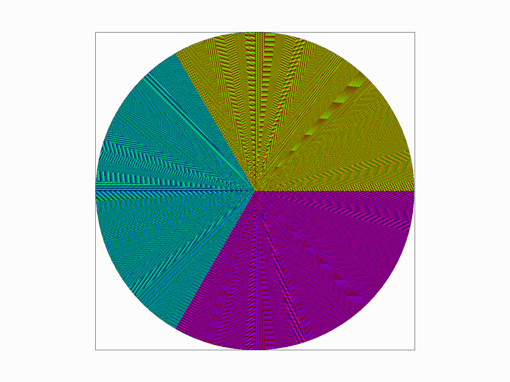
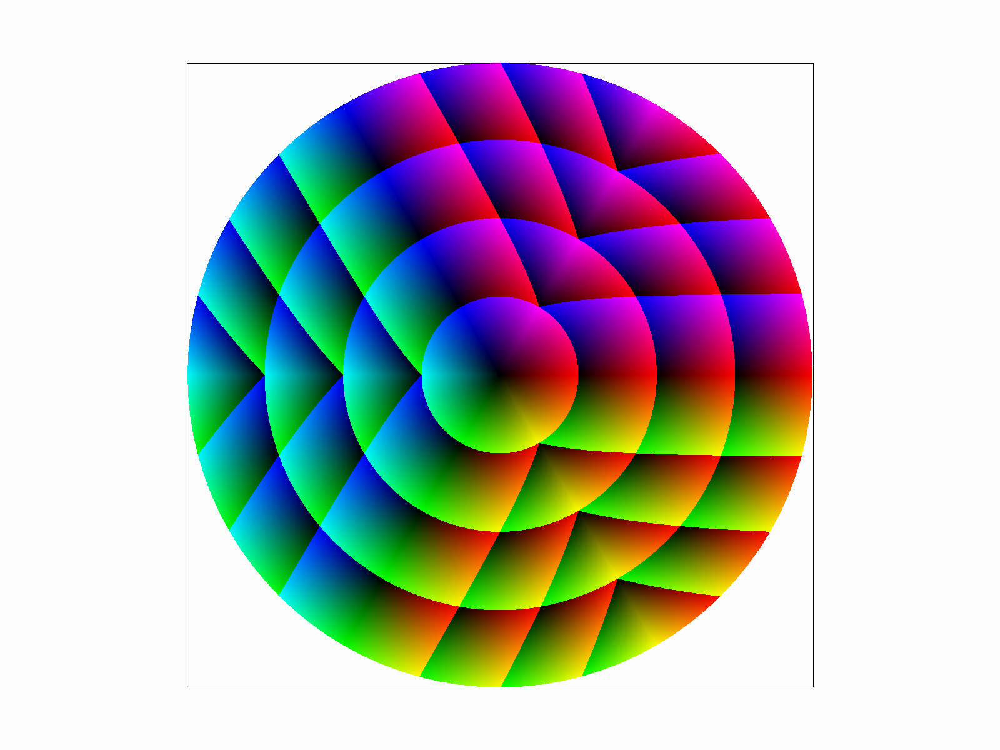
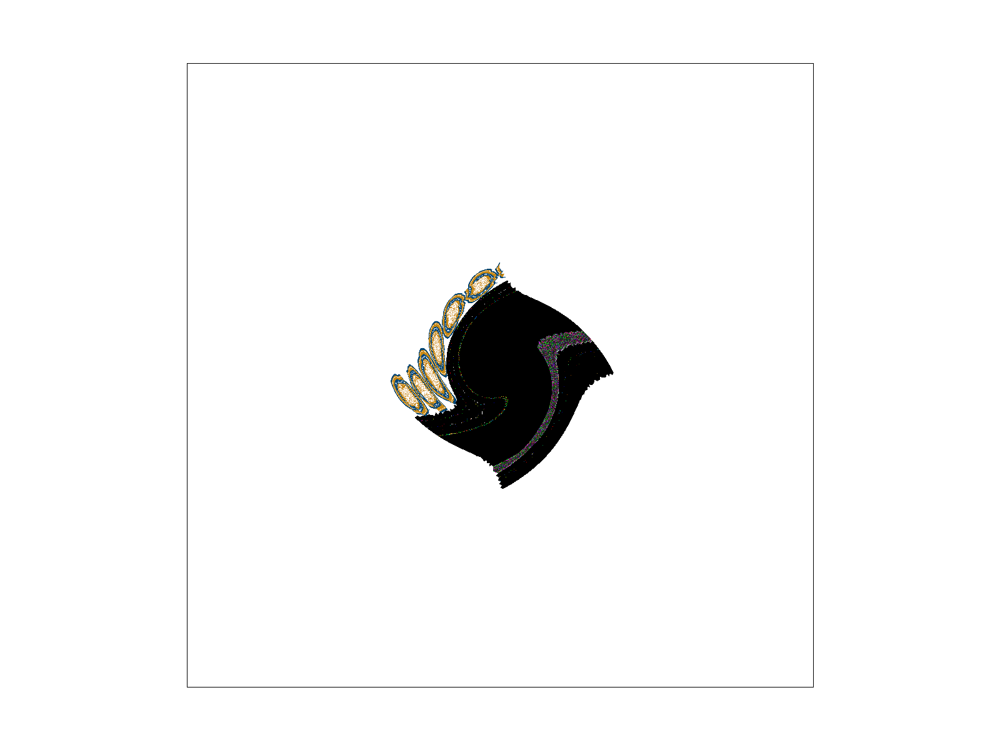
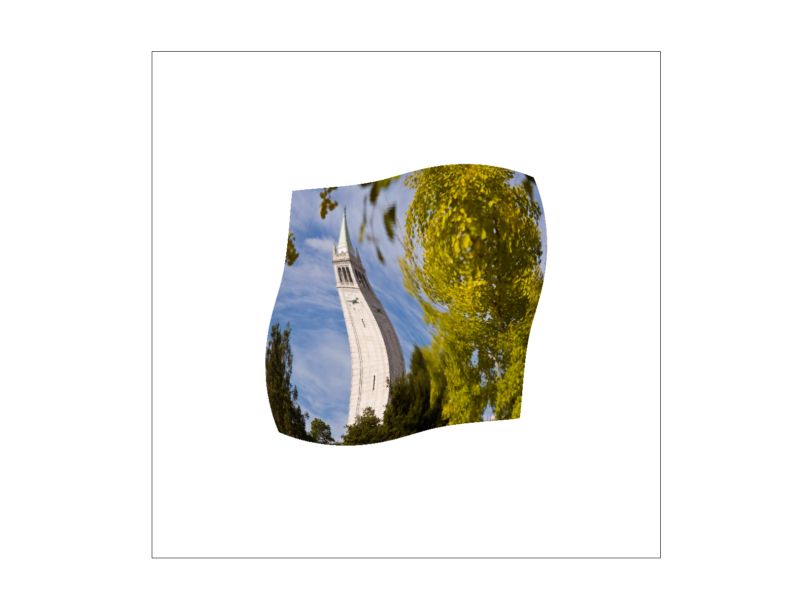

This project consists of a few main ideas: Rasterization, Supersampling, Transformations, Using Barycentric Coordinates, and Using Mipmaps. For each part, I will give a brief explanation of what the task achieved.
My approach to each problem was to first make sure I knew the end goal was. I did this by watching lectures and looking at discussion notes. After I understood, I would then go and make sure I knew how each function worked and what it did. This was one of the most time consuming parts for me because there were a lot of functions that I didn’t know how to use and C++ is also a new language for me. After I understood how to use all the functions, I would put in my first draft of code and then go off of that to debug (this was definitely the most time-consuming part of the project).
This project allows you to generate images while improving the viewing quality. Rasterizing triangles and Transformations allow the image to appear, while supersampling, interpolation, and mipmaps allow each individual image to blend more seamlessly into one another, which will usually improve the viewing experience.
Through this Homework, I feel that I have learned a lot about the behind-the-scenes processes of each rendering technique. I have also learned a lot about problem-solving when debugging, and different techniques you can use to figure out what’s wrong with your code. Finally, I feel like I am able to understand how each formula works with barycentric coordinates, line equations, linear interpolation, and finding mipmap levels. This homework has overall given me an in-depth understanding of how image production works and different techniques to make images look better.
This first task goes through how to produce simple shapes with triangle rasterization.
To rasterize triangles, we are given three points and a color to fill in the triangle. Using this information, we can figure out which pixels to color in using line formulas.
e0 = (pX - x0) * (y1 - y0) - (pY - y0) * (x1 - x0);
e1 = (pX - x1) * (y2 - y1) - (pY - y1) * (x2 - x1);
e2 = (pX - x2) * (y0 - y2) - (pY - y2) * (x0 - x2);
The algorithm I ended up using was one that first found the bounding box of the triangle, then went through each row to check if the pixel was inside the triangle. Since you know that there won’t be any valid points outside the bounding box, by finding it first, you won’t waste time searching the rest of the sample_buffer.
Additionally, since the shape we are rasterizing is a triangle, for each row that we are checking the bounds for the pixels, once we finish the row, that means that we do not have to finish checking the rest of the row. To take advantage of this, I added a boolean that kept track if we had ‘entered’ the bounds of the triangle. If we had, and the point that was just checked was invalid, then we know that we are done with that row, and therefore can move to the next row.
While I wasn’t able to check the differences in efficiency because of time constraints, I was able to tell that it didn’t check as many points by using the debugger.
This task implements supersampling. This is when the image generator takes more samples within the pixel, and then averages out the color. The purpose of this is to make the lines appear smoother, instead of having jagged edges which appear mostly at corners and diagonal lines. Supersampling can also reduce aliasing (which is when information is lost due to low sampling rates). So instead of having jagged lines or random dots at the edges of triangles, we can have a gradual fade as you go from the center to the point of the triangle.
A few modifications that were done in order to incorporate supersampling were:
Modifying the sample_buffer size in order to increase the sampling rate of each pixel. This was done in functions set_sample_rate() and set_framebuffer_target().
fill_pixel(): changing it to fill in every supersample in the pixel.
rasterize_triangle(): changed to take more samples per pixel.
resolve_to_framebuffer(): changed to take the average of each pixel according to the amount of super samples there are.
The beginning setup (which is nearly the same as when there was no supersampling) includes finding the bounding box of the triangle which will minimize the amount of pixels that have to be checked.
Next, there are two for loops. In this algorithm, we go by every supersampled row in the y axis, and then by every pixel in the x axis. This allows us to skip sampling inside the pixel if we know that there will not be inside the triangle.
If the sample that is checked happens to be a valid point inside the triangle, then there is another for loop that checks the rest of the row
What does this mean and how is it faster? For example, if we have a pixel that has a sample_rate of 16, it means that there are 4 total samples in the x direction multiplied by 4 total samples in the y-direction which results in 16 total samples in a single pixel. This algorithm will check every row in the y direction (4) and then only one sample in the x-direction per row. This is a total of 4 samples per pixel.
This part mainly implemented transforms such as scaling, rotating, and translating.
For this cube-person, I changed the pose and outfit in order to make a ballerina. I changed the arm position and rotation to make it more curved and slightly more natural, and added hair and a skirt. Finally, I changed the color of the body parts so that it would look like the ballerina was wearing tights, a leotard, and a tutu.
This task implemented barycentric coordinates in order to form smooth transitions between pixels given the colors at each of the points.
Barycentric coordinates refers to a system that uses the three points of a triangle (A, B, C) in order to define another point (D). However close point D is to the others is reflected in the equation ɑA + βB + ɣC = D, where ɑ, β, and ɣ reflect how close point D is to points A, B and C, respectively.
Take a look at this triangle above. ɑ will represent the red (A), β for the blue (B), and ɣ for the green (C). If ɑ = 1, this means that point D = A, if β = 1 then Point D = B, and so on. Intuitively, using the triangle as a guide, the closer point D is to the red corner, the higher ɑ will be.
Since ɑ + β + ɣ = 1, we can use this to figure out how ‘green’, ‘blue’ or ‘red’ point D will be based on the colors defined in the corners.
This task is similar to the other triangle rasterizing tasks except for when we sample the color to produce the pixel, we have to sample it from an image instead of being given a single color, or interpolating it from triangle points. The way we sample in this part is also interesting because the triangles we are extracting the color from may not be the exact same proportions as it is on the image we’re trying to render. This means that we can render stretched or squished versions of the original images we sample from.
Pixel sampling means that you use another image to sample the colors in the shapes you’re trying to make instead of using a single color like in task 1, or barycentric averages like in task 4.
In the function, you are given a texture (image), three sets of points (mapping to your final, rendered image), and their corresponding uv points (mapping to the image). Using this information, you do similar calculations from task 1 and 4 to find which points are inside the triangle. The only thing that’s different is finding the value for what color it is. To do this, we have to use barycentric coordinates (similar to task 4) in order to find the corresponding coordinates in the texture map. In other words, if we find the ɑ, β, and ɣ values, we will be able to find the relative point on the texture map. Using that point, we can use sample_nearest or sample_bilinear to extrapolate the color and send it to the sample_buffer.
To put it simply, bilinear sampling means to take the weighted averages of the 4 nearest color samples (u00, u01, u10, u11), depending on how close the point is to each pixel. This type of sampling uses linear interpolation (lerp) between two points (u00, u10), another lerp between the other two points (u01, u11), and then finally lerps them together. This gives a final color with the equation of lerp(lerp(u00, u10), lerp(u01, u11)).
On the other hand, nearest sampling is much less complicated, and simply requires you to return the color of the nearest pixel.
The difference is that nearest sampling will sometimes cause random spots of color to appear and the pixels are more defined, while bilinear sampling will give you a smoother transition between each color.


Taking a look at the zoomed in area, there is a large difference between sample 1 per pixel and supersampling 16 per pixel; and there is another large difference when using bilinear sampling vs. nearest sampling at 1 sample per pixel. On the contrary, there is not much difference between nearest and bilinear sampling when supersampling.
This is because both supersampling and bilinear sampling are both methods that take the average of nearby colors, which will smooth out the transitions between colors and lines. Overall, using only 1 sample per pixel and nearest sampling can cause huge jumps in the image, and using supersampling and bilinear sampling can help to average out the values and create smoother transitions between pixels.
This task is used to implement Level Sampling with mipmaps in order to create smoother transitions when images are squashed or stretched.
Level sampling is when you sample from different versions of the same image. Each version, or mipmap, can be described as having a level assigned to it, and the higher the level, the more blurred the image will be. Depending on how squashed or stretched the image is, you can choose which mipmap to use: A lower level for stretched areas, and a higher level for squished areas.
In task 5, we used barycentric coordinates to find corresponding points (uv) from the image to the texture. To calculate the level, we have to first find the difference vectors, which can be calculated by plugging in (x+1, y), and (x, y+1) to find the barycentric coordinates of each. Using those values, we can find the level after scaling the vectors by the image width and height, finding the max value of each normalized vector, and then taking the log of that value.
Once we find the level, we can use that to take samples from that mipmap and return it to the frame_buffer.
With supersampling, you can get a very nice and even result, and it can significantly reduce aliasing. However, it takes a lot of memory and time to calculate as you start to take more samples per pixel. This is because you need to be able to store every single sample value you take, which can be very costly. Depending on the amount of samples per pixel, super sampling can be one of the most time and memory consuming methods.
Pixel sampling is much faster than the other methods because it does not require nearly the same amount of calculations. It does not have to sample as many pixels, nor does it have to calculate difference vectors. And while nearest pixel sampling can have aliasing, bilinear sampling can reduce that dramatically. Pixel sampling also does not require as much storage as the other methods because it doesn’t require the frame_buffer to be resized, nor does it have to create mipmaps
Level sampling can reduce aliasing in very cramped areas of the image. However, sometimes the levels that are calculated don’t reflect the amount of blurring that needs to occur, and can therefore lead to more aliasing when it becomes too blurry. However, it is faster than supersampling and does not take up as much memory, however, it is still more memory consuming than pixel sampling because it needs to calculate/store mipmaps and difference vectors.
I'm not going to lie, I had a lot of trouble on this, but I got through it! I got to learn a lot about this and the only thing I wished I had done was search for a partner earlier :(
I also think that I wasn't able to implement Level sampling quite right, but I tried a lot of different things and it wouldn't get quite right, but it was good enough. There are a few lines that appear for the edges of the triangles, and it gets really blurry when you zoom out (not sure if that is correct or not).
But anyways, here's some fun screenshots I took of some interesting things:
  Here's also a screenshot of when my Level sampling was working correctly:
Thanks for reading!